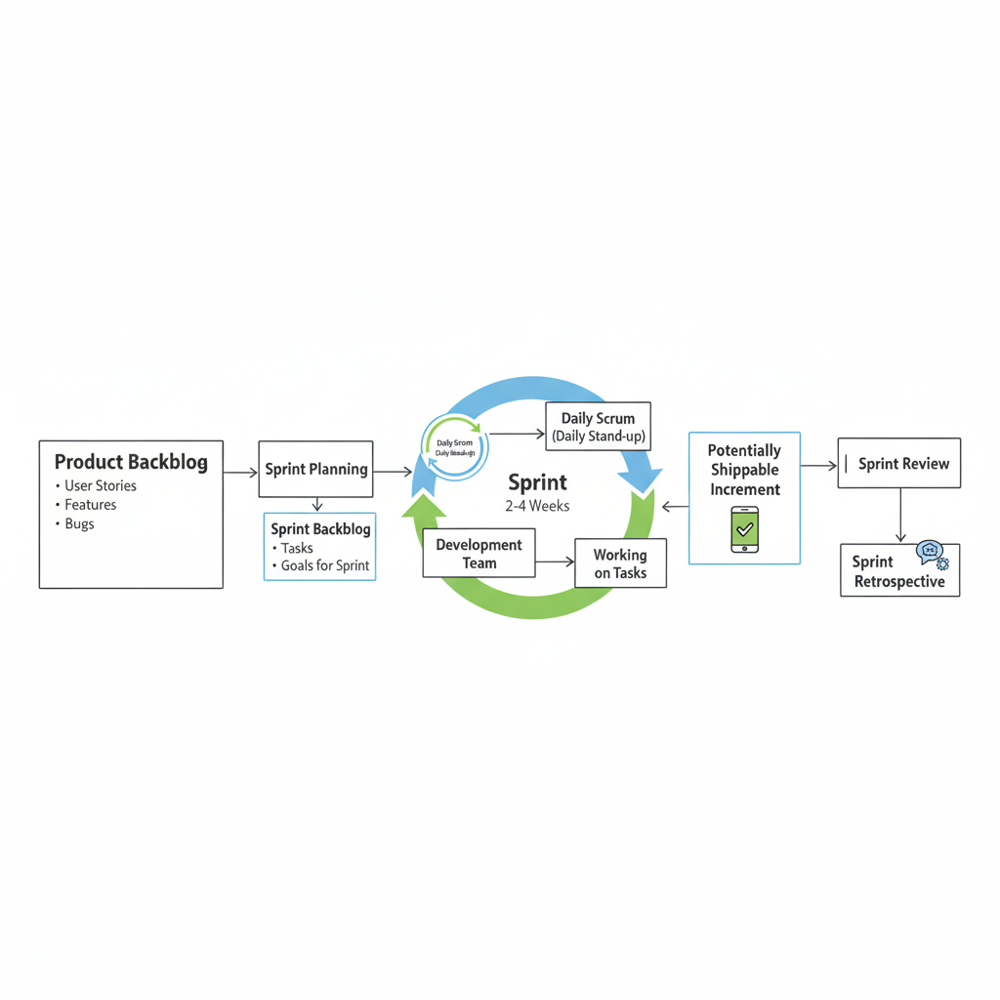
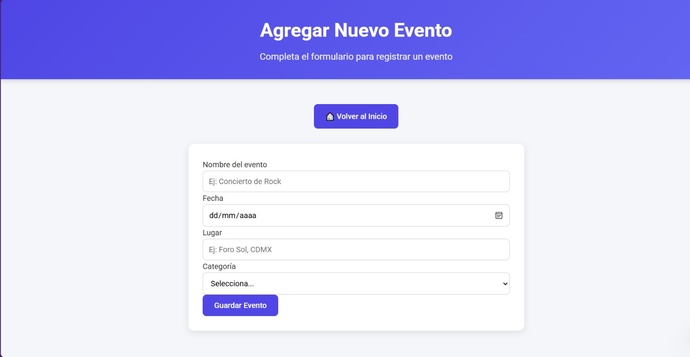
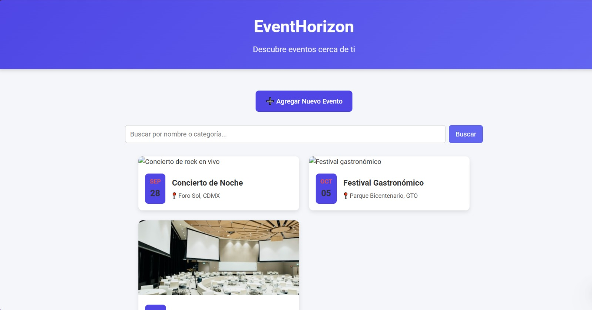

1. Metodologías Ágiles
Investigación y justificación: Para este proyecto, hemos utilizado Scrum, una metodología ágil que nos permitió adaptarnos a los cambios y entregar valor de forma continua. A diferencia de otras metodologías como Extreme Programming, Scrum se enfoca en la gestión del proyecto a través de iteraciones cortas (sprints), lo cual fue crucial para un proyecto dinámico como una app de eventos.
Arquitectura de software: La aplicación sigue un patrón de diseño MVC (Modelo-Vista-Controlador). Esta arquitectura separa la lógica de la interfaz de usuario, lo que facilita el desarrollo y el mantenimiento del código, permitiendo a los diferentes integrantes del equipo trabajar en partes separadas sin generar conflictos.
2. Selección de Metodología
Características Principales de Scrum
- Sprints: Ciclos de trabajo de duración fija (usualmente 2-4 semanas).
- Roles: Scrum Master, Product Owner y Equipo de Desarrollo.
- Artefactos: Product Backlog, Sprint Backlog e Incremento del producto.
¿Cuándo usar Scrum?
Es ideal para proyectos con requisitos cambiantes o para equipos que necesitan un alto grado de flexibilidad. En una app de eventos, esto es clave ya que las funcionalidades pueden evolucionar rápidamente según el feedback de los usuarios y las tendencias del mercado.
Diagrama de Scrum
Ejemplos de Aplicaciones
Aplicaciones como Spotify y Google utilizan principios ágiles para el desarrollo de sus productos, al igual que muchas plataformas de gestión de eventos, que necesitan actualizarse constantemente con nuevas funcionalidades y mejoras.
3. Plan de Desarrollo del Proyecto Móvil
Nombre del Proyecto:
App de Eventos
Visión del Proyecto:
La visión de este proyecto es crear una aplicación móvil que permita a los usuarios descubrir, registrarse y gestionar eventos de forma sencilla y eficiente, promoviendo la participación en la comunidad y la organización de actividades de interés.
Roles del Equipo:
- Product Owner: Eduardo Zapatero
- Scrum Master: Gerardo Hernandez
- Scrum Team: Brayan Gonzales y Fernando Martinez
Planificación por Sprints
El proyecto se dividió en **3 sprints** de dos semanas cada uno, con el objetivo de entregar un incremento de producto funcional al final de cada ciclo.
Sprint 1: Funcionalidad de Autenticación y Navegación (2 semanas)
- Objetivo: Crear un prototipo funcional con el flujo de inicio de sesión y la navegación principal.
- Historias de Usuario:
- Como usuario, quiero poder crear una cuenta y acceder con mis credenciales.
- Como usuario, quiero ver una pantalla de inicio con un feed de eventos principales.
- Como usuario, quiero poder navegar entre las diferentes secciones de la app (Home, Perfil, Buscar).
Sprint 2: Búsqueda y Visualización de Eventos (2 semanas)
- Objetivo: Implementar la funcionalidad de búsqueda y la visualización detallada de eventos.
- Historias de Usuario:
- Como usuario, quiero buscar eventos por nombre, categoría o fecha.
- Como usuario, quiero ver los detalles de un evento (descripción, ubicación, fecha, hora).
- Como usuario, quiero poder registrarme en un evento.
Sprint 3: Funcionalidades Avanzadas y Finalización (2 semanas)
- Objetivo: Añadir funcionalidades extra y preparar la aplicación para su lanzamiento.
- Historias de Usuario:
- Como usuario, quiero guardar eventos en una lista de favoritos.
- Como usuario, quiero recibir notificaciones sobre eventos en los que estoy registrado.
- Como usuario, quiero crear mis propios eventos y compartirlos.
Tecnologías y Estrategias
- Justificación de la Metodología: Scrum permitió a nuestro equipo gestionar los cambios en las funcionalidades de la aplicación de manera eficiente en cada sprint, asegurando que cada integrante del equipo (Brayan y Fernando) supiera exactamente qué tareas debía completar.
- Framework de Desarrollo: Desarrollado en React Native para asegurar la compatibilidad con dispositivos iOS y Android desde un único código base.
- Patrón de Diseño: Se usó el patrón MVC para mantener la lógica del negocio separada de la interfaz de usuario, facilitando el desarrollo en equipo.
- Estrategias de Prueba: Se realizaron pruebas unitarias para cada componente (como el de autenticación o el de registro de eventos) y pruebas de integración para asegurar que la comunicación entre el front-end y la base de datos funcionara correctamente. También se llevaron a cabo pruebas manuales de la interfaz de usuario.
- Estrategias de Versionamiento: Se gestionó el código con Git y GitHub. Se crearon ramas para cada nueva funcionalidad para evitar conflictos y se realizaron `merges` al finalizar cada sprint.
4. Desarrollo de la Aplicación
El objetivo:
El objetivo principal de la aplicación es proporcionar una herramienta simple y eficaz para que los usuarios puedan explorar, buscar, registrarse y gestionar eventos, con la opción de filtrar por tipo de evento, fecha o ubicación.
Breve resumen del proceso:
El proceso de desarrollo comenzó con la ideación y un prototipo inicial. En el primer sprint, diseñamos la estructura de la app y la navegación principal, incluyendo el flujo de inicio de sesión. El segundo sprint se centró en la implementación de la base de datos de eventos y la funcionalidad de búsqueda. Finalmente, el tercer sprint se dedicó a pulir la interfaz, implementar la función de "guardar en favoritos" y resolver los errores finales. El uso de Scrum nos permitió hacer un seguimiento constante del progreso y adaptarnos a las necesidades que surgieron durante el desarrollo.
Pantallas de la Aplicación:
 Conclusión:
Este proyecto me enseñó la importancia de la planificación ágil y el trabajo en equipo. La experiencia me preparó para enfrentar desafíos reales en el desarrollo móvil y me demostró que una buena metodología es clave para el éxito de cualquier proyecto.